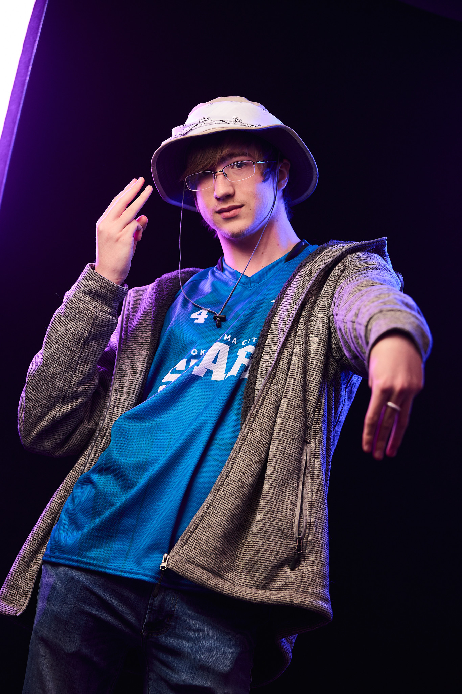

About Me
Do you ever get the feeling you're forgetting something when you leave home, but no matter how many times you check you're not missing anything?
Yeah, that's me. Sorry about that.
I'm a Computer Science major at Oklahoma City University colloquially known as "the guy on campus wearing
the funny hat all the time" to my fellow students. I've done many things in my life - I've become an Eagle scout, got a metal bar inserted into my
chest, briefly participated in a coup for a fictional state, played at least one game of Dungeons and Dragons, participated against my will in
approximately seven different sports, broke both my arms at the same time, got patted down by TSA for cajun seasoning, watched the hit 2006 movie
Robots, broke both my arms at the same time again, and even ate at a Denny's - all in no particular order, of course. A pretty spiffy trophy shelf
if I do say so myself.
This website is a portfolio of my works meant to look good on job applications. "Wow, this guy can make websites!" That's what the intended effect
is. Contact information at the footer if you got any questions for me, or if you want me to talk about cephalopods for an uncomfortably long time.